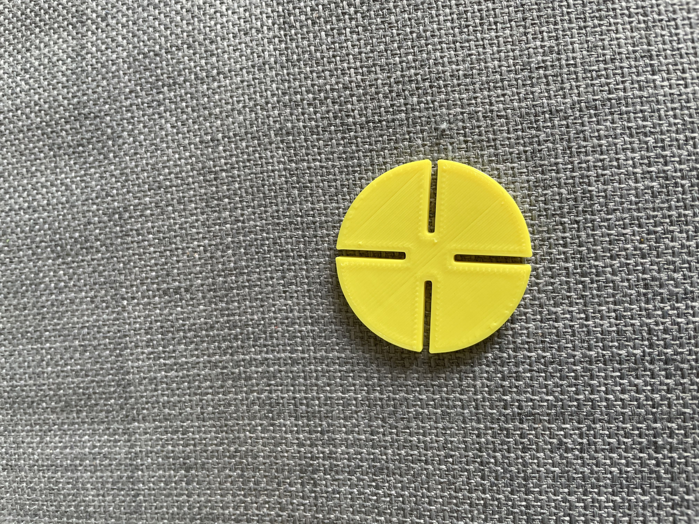
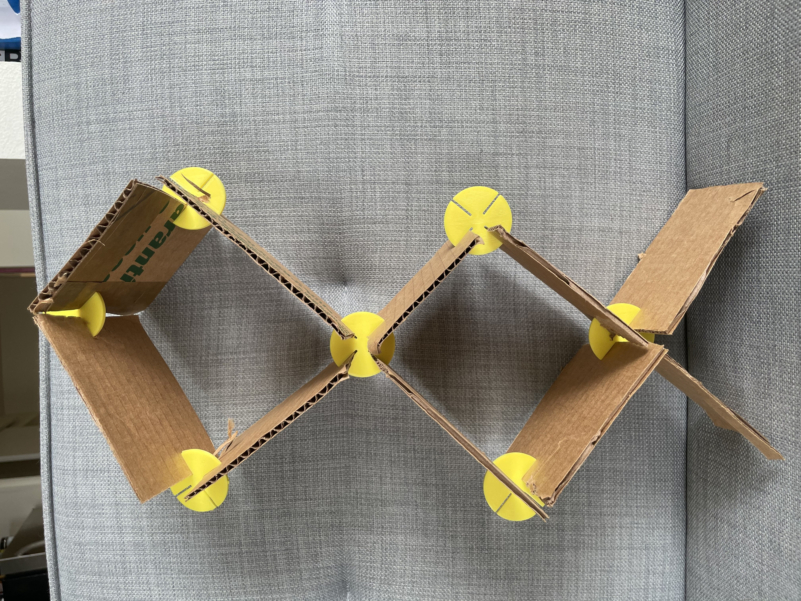
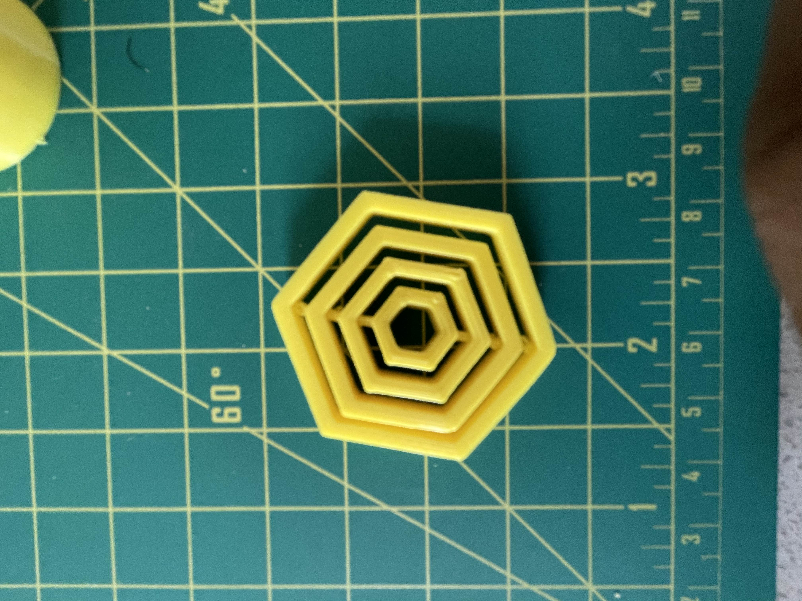
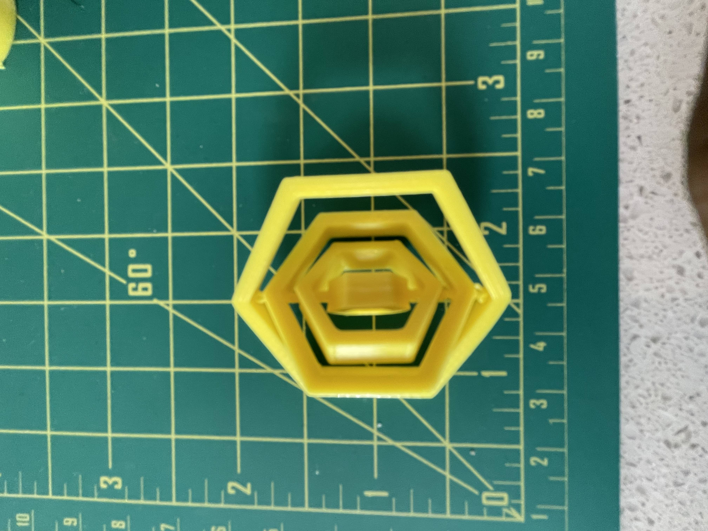

Naser Alqseer's Assignment 3: Getting started with Grasshopper!!
I used grasshopper and rhino to make a 3D model of a cardboard clip and a nested hexagon geometry. The shape I used for my clip was a circle with slots in it. I determined the width of the slot by measuring the cardboard I was working with which was around 2 mm. I originally designed my slots to be 2 mm but that led to the cardboard sliding off. I went by to grasshopper and adjusted the widith of the slot to 1.75 mm in order to see my limits. However, 1.75 ended up giving me a good width that fit the slot. Then another issue came up as my circle felt too small and would move and easily slip with enough movement. I increased the radius of my circle to 20 mm and that ended up giving great results.



clippity .3dm Clip .gcode Clip .stl Grasshopper file for the clip
Next part of the assignment was about making nested geometry using grasshopper and rhino. I used a hexagon for my geometry because I honestly was not sure how it was going to turn out so a safe geometry felt like the move to make. I created the geometry in grasshopper and then connected it using a line extrude in rhino.


clippity .3dm Clip .gcode Clip .stl Grasshopper file for the clip